見本 1
場面の切り替え
背景が替わるたび。第1章だけで約90回- 紫の面で覆うのをやめ、前の背景が次の背景へ直接ほどけます。A は 0.7 秒、B は 0.55 秒（いまは 0.75 秒）。
- A は煙が立ちのぼるように下から。B は登場カットインと同じ網点の質感。A を標準に決めました（煙の店のゲームなので煙で切り替える。種類は増やさない）。B は比べる用に残しているだけです。
- 同じ仕組みで「回想に色が戻る」「再挑戦で色が戻る」「フィナーレの混ざる煙」も作れます。
水煙前線 -EN:CODE-モーション改善案2026-11-11
いま入っている演出28種類を、実機で通常の速さで再生して見直しました。しょぼく、ちぐはぐに見える原因は共通です。背景もカットインも描き込まれた絵なのに、演出だけが紫の平らな図形でコードから描かれています。
直し方も共通です。図形をやめて、その場の背景と、採用済みの登場カットインの絵柄で作ります。下に動く見本を6つ置きました。占いの札のほかは、ゲームにすでにある絵だけで作っています。
どちらもいまの本編の画面です。上はなじんでいるもの、下は浮いているもの。分かれ目は、ゲームの絵を使っているかどうかでした。
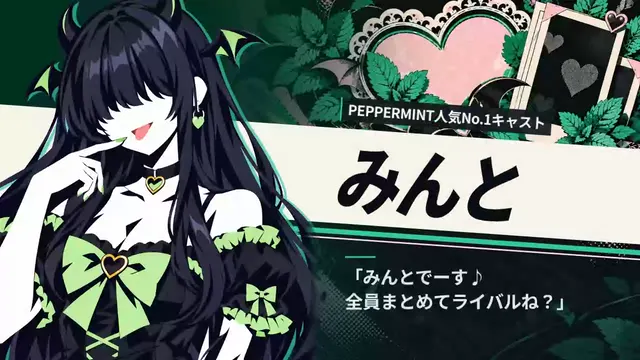
登場カットイン：その人の絵柄と帯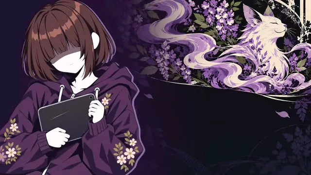
登場カットイン：色も模様も本人のもの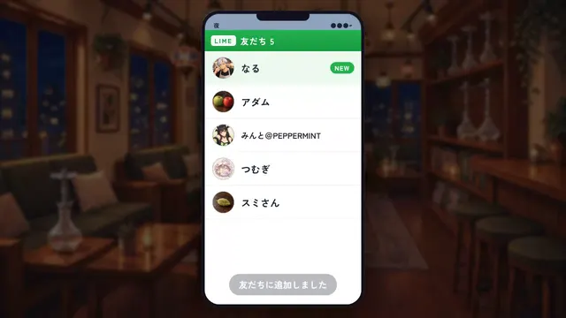
LIME交換：実際の画面と店内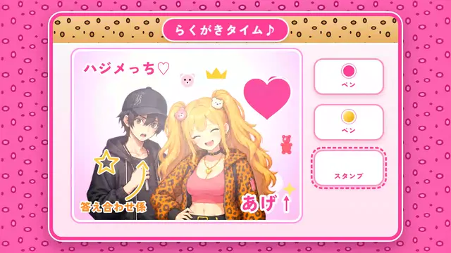
プリクラ：立ち絵と店の柄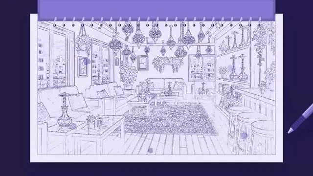
スケッチ：背景から起こした線画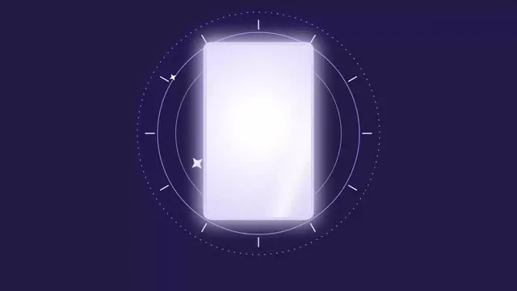
占い：めくった札が白紙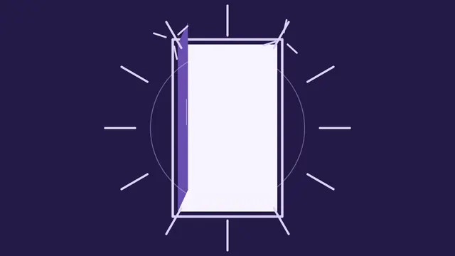
帰宅：線で描いた扉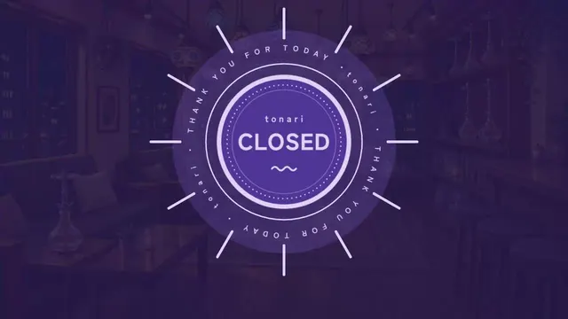
バイト終業：店内が紫で隠れる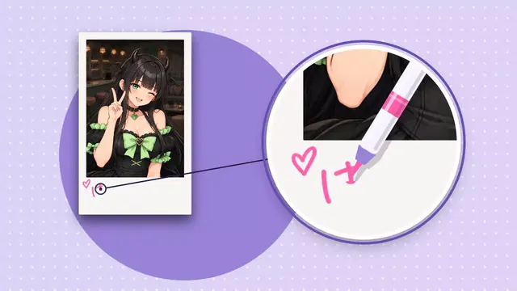
チェキ：主役の写真が小さい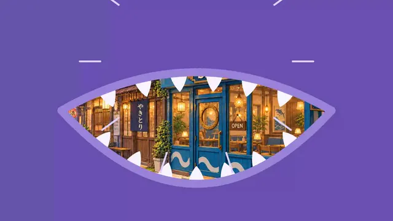
サメちゃん：青い店が紫の口に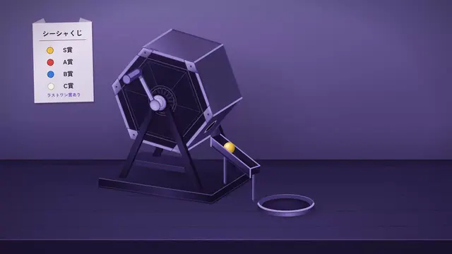
くじ：店の絵が紫の舞台に替わる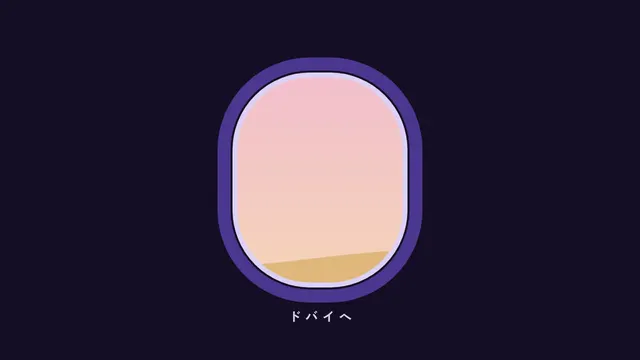
ドバイへ：小さな窓が1つ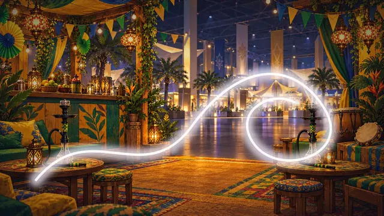
龍の煙：白い線が1本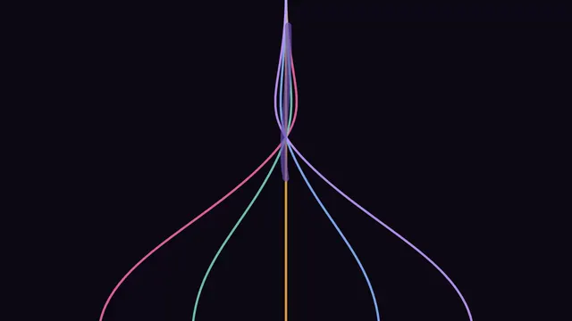
フィナーレの煙：細い線が5本背景・立ち絵・カットインは描き込んだ絵。演出は1〜3色の平らな図形。演出が出るたびに、別のゲームの画面へ切り替わって見えます。
ほとんどの演出が、まず画面全体を紫で覆い、何もない面に図形を置きます。ミントとピンクの PEPPERMINT も、青い SHISHARK も、同じ紫に塗り替わります。
めくった札は白紙、龍の煙は線1本、ROUND 1 は小さな文字。数秒待たせた先に、見せるものが用意されていません。
これまでのご指摘「スケッチはいい感じ」「ハガルはちゃんと生成された絵で」「ペンだけダサい」「サメの顔がキモい」「ローディングの煙がダサい」も、同じ線で説明がつきます。絵を使った所は良く、コードで描いた物が悪い。10月から基準にしてきた2つの約束「画像を使わず図形で描く」「紫1色でそろえる」が、その原因でした。
そろえるのは色や形ではなく、作り方です。素材は場面ごとに、その場所とその人から取ります。
前の絵が次の絵へ直接ほどける。紫の面を挟まず、カメラの寄り・光・にじみで背景そのものを動かします。
登場カットインの背景が33人分、採用済みであります。チェキはみんとの絵柄、贈り物は贈り主の絵柄の上で。色もそこから取ります。
札・箱・扉・抽選器・窓。すでに絵があればそこから使い、なければ同じ絵柄で生成します。
章題と同じ明朝で大きく、または登場カットインの帯に載せる。小さなゴシックの添え書きにしません。
毎日見るものは1〜2秒で静かに。時間を使うのは、物語の要所と一度きりの出来事だけ。
左がいまの本編の録画、右が改善案です。画面を押すと再生します。右は、ゲームにすでにある絵と、Codex に作ってもらった占いの札（Issue #3254）で作っています。
残すものは基準として使い、作り直すものは上の決まりで作ります。
5残す3一部を直す18作り直す1やめる1対象外
| 演出 | 判定 | いま | 直し方 | 新しい絵 |
|---|---|---|---|---|
| 毎日見るもの | ||||
| 場面の切り替え | 作り直す | 紫の一筆が画面を覆う | 見本1。覆わずに前の絵がほどける | 不要 |
| マップから店へ | 作り直す | 紫の円と、白い札のロゴ | 見本2。地図へ寄って、ロゴを抜けて店内へ | 不要 |
| 帰宅の扉 | 作り直す | 線で描いた扉 | 見本2。部屋に灯りが点く。扉は描かない | 不要 |
| 就寝から翌朝へ | 作り直す | 紫の幕、小さな DAY、太陽の図形 | 見本3。部屋の夜と朝の絵をつなぐ | 不要 |
| DAY カード | 作り直す | 暗い帯に小さな文字 | 見本3と同じ題字にそろえる | 不要 |
| バイト終業 | 作り直す | 紫の丸い札が回る。4.4 秒 | 店の閉店の札を1回返すだけ。1.2 秒。店内は隠さない | 閉店の札（表と裏・届いた） |
| 電車 | 一部を直す | 人混みの絵（良い）を紫1色で塗っている | 絵は活かす。昼は日差し、夜は車内灯の色で塗り、窓の光を流す | 不要 |
| 遠くへの移動 | ||||
| 新幹線 | 作り直す | 紫の線画の車内 | 見本6。本物の車内の絵で車窓を流す | 不要 |
| 飛行機 | 作り直す | 暗い面に小さな窓が1つ | 機内の窓の絵で、雲と空の色を流す。行き先は題字で | 機内の窓の席、雲海（夜・夜明け・届いた） |
| 配送便 | やめる | 飛行機と同じ窓の図形 | ふつうの切り替えと題字だけにする | 不要 |
| 人との出来事 | ||||
| チェキ | 作り直す | 紫の地、カメラの図形、写真が小さい。10 秒 | みんとの絵柄を舞台に、写真を主役の大きさで。落書きの書き順はいまのものを活かす。5 秒 | マーカー2本（届いた） |
| 占い | 作り直す | 紫の札をめくると白紙 | 見本4 | 札の裏と表の枠（届いた） |
| 贈り物 | 作り直す | 白い箱の図形と紙吹雪 | 見本5 | 不要 |
| サメちゃんとの出会い | 作り直す | 紫の口と三角の牙 | サメちゃんの絵柄と店の青で。牙の図形はやめる | 不要 |
| ガラガラくじ | 対象外 | 既定の配色が紫1色で、店の絵と合わない | くじのチャットが、Codex の絵で作り直している（PR #3212・Issue #3228・PR #3251）。この計画では触らない | — |
| スケッチ | 一部を直す | 線画は良い。紙のスケッチブックとペンが紫の図形で、台本のタブレットとも合わない | 台本どおりタブレットに替え、その画面に線画を描く | タブレットとペン（届いた） |
| LIME 交換 | 残す | 実際の画面と、ぼかした店内 | そのまま | 不要 |
| プリクラ | 残す | 立ち絵・CG・店の柄 | そのまま | 不要 |
| 章の要所 | ||||
| 章題 | 残す | キーアートと題字 | そのまま。題字の基準にする | 不要 |
| 登場カットイン | 残す | その人の絵柄と帯 | そのまま。演出の舞台の基準にする | 不要 |
| 回想から現在へ | 作り直す | 紫の大きな葉の形 | 色の抜けた絵に、色がにじんで戻る（見本1の仕組み） | 不要 |
| 龍の煙 | 作り直す | 白い線が1本 | 圧倒される場面なので一枚絵にする。線では足りない | CG 1枚 |
| 「???」の走査 | 残す | 横線のノイズ。短く控えめ | そのまま | 不要 |
| フィナーレの混ざる煙 | 作り直す | 細い色の線が5本 | 質感のある煙が本当に混ざる（見本1の仕組みに色をつける） | 不要 |
| 敗北の入り | 一部を直す | 会場の色が抜ける（良い）。白い線の煙 | 色が抜けるのは残す。線をやめ、照明が落ちる | 不要 |
| 再挑戦 | 作り直す | 紫の一筆 | 色が戻る（見本1の仕組み） | 不要 |
| 大会 | ||||
| 会場入り | 作り直す | ぼかした白い円が広がる | 見本1のにじみを濃く、長く | 不要 |
| ROUND の帯 | 作り直す | 細い帯に小さな文字 | 登場カットインの帯の組み方で、大きく | 不要 |
紫1色は既定の配色で、実装には「場面ごとの色」の版もあります。色を替えても平らな図形のままなので、判定は変わりません。ガラガラくじは、くじのチャットが絵から作り直しているので、この計画から外しました。
作り直す18件のうち15件は、新しい絵なしで始められます。よく見るものから、1つずつ本編へ入れます。
場面の切り替え、マップから店へ、帰宅、就寝から翌朝へ、DAY カード。新しい絵は不要。ゲーム全体の印象がいちばん変わります。
占い、贈り物、チェキ、サメちゃん。登場カットインの絵柄を舞台にします。新しい絵は不要。
バイト終業（閉店の札）、スケッチ（タブレットとペン）、飛行機（機内の窓の席と雲海）、龍の煙（一枚絵）。龍の煙のほかの絵は、占いの札とチェキのマーカーとあわせて11枚とも Codex から届いています（Issue #3254・remake/img/ui/transitions/）。
新幹線、電車、回想、フィナーレ、敗北と再挑戦、大会の2つ。配送便の窓はやめます。あわせて資料の「画像を使わない」「紫1色」の約束を、上の5つの決まりへ書き換えます。
オーナーの返事「方向の決定は任せる」を受けて、残りはこちらで決めました。